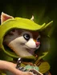
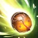

Acorn Shot
Targeted Active ability: Activates instantly
Hoodwink attacked with an acorn at the target unit. The acorn bounces to nearby targets, bouncing it to several nearby threatening enemy chess pieces, dealing physical damage, and granting a 100% chance for probable effects of all allies’ synergy on its victims.
| ★ | ★★ | ★★★ | |
|---|---|---|---|
| Target count | 2 | 3 | 4 |
| Physical damage | 50 | 75 | 100 |
| Duration | 3 | 5 | 7 |
| Cooldown (s) | 12 | 8 | 4 |
- Not stackable.
Though she will make do with almost anything, Oak and Ironwood acorns make the most effective projectiles -- and the bulk of Hoodwinks stash.
Stats
| ★ | ★★ | ★★★ | |
|---|---|---|---|
| Health | 550 | 1100 | 2200 |
| Mana | 0 | 0 | 0 |
| Armor | 2 | 2 | 2 |
| Magic resistance | 0% | 0% | 0% |
| Attack damage | 40–60 | 80–120 | 160–240 |
| Attack interval (s) | 1.2 | 1.2 | 1.2 |
| Attack range | 400 | 400 | 400 |
| Move speed | 500 | 500 | 500 |
 Beast · Power of the Wild
Beast · Power of the Wild
- (2) All allies, including summons, deal +10% attack damage.
- (4) All allies, including summons, deal another +25% attack damage (+35% in total).
- (6) Physical damage from your allies stacks a debuff on the target, up to 10 stacks. Each stack makes it take +10% physical damage, up to +100%.
 Hunter · Aimed Shot
Hunter · Aimed Shot
Hunters always attack the enemy with the lowest current health within attack range. Wizards and other low-priority units are picked last.
- (3) Hunters' attacks have a 50% chance to be a precise shot: it can't miss and gives -5 armor for 5s.
- (6) Hunters get a separate 80% chance for a precise shot: it can't miss and gives -8 armor for 8s. This stacks with the (3) debuff.
- (9) Precise shots also knock the target back 1 grid and trigger an extra attack (at most once every 0.5s).